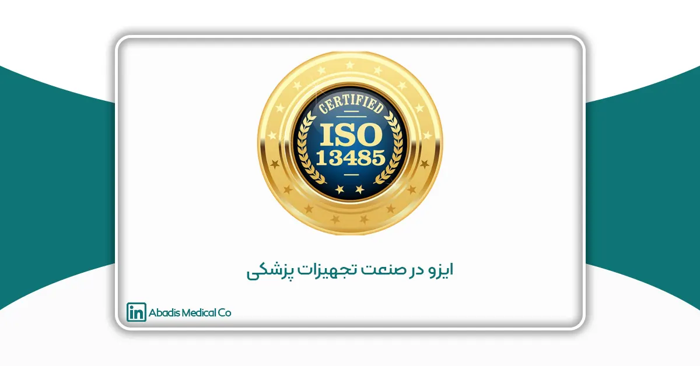
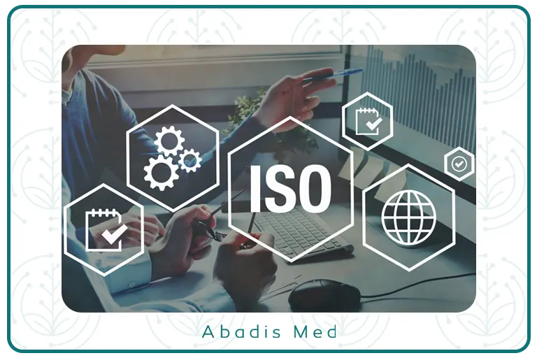

مقدمه
ISO (سازمان بین المللی استاندارد) فدراسیون جهانی استانداردهای ملی است؛ ایزو 13485 یک استاندارد بین المللی است که الزامات یک سیستم مدیریت کیفیت در صنعت تجهیزات پزشکی را مشخص می کند؛ این استاندارد مختص دستگاههای پزشکی است و کل چرخه عمر یک دستگاه از مرحله طراحی و توسعه گرفته تا تولید، نصب و خدمات پس از فروش را پوشش می دهد.
انطباق با ایزو 13485 اغلب برای تأیید نظارتی دستگاههای پزشکی در بسیاری از کشورهای جهان مورد نیاز است، این استاندارد به گونهای طراحی شده است که انعطافپذیر و مقیاسپذیر باشد و همچنین این امکان را فراهم مینماید تا با نیازهای سازمانها در هر اندازه و نوع در صنعت تجهیزات پزشکی سازگار گردد؛ در این مقاله به بررسی ایزو 13485 برای دستگاه های پزشکی میپردازیم.
هدف ایزو 13485 چیست؟
ایزو 13485 پرکاربردترین استاندارد بین المللی صنعت تجهیزات پزشکی برای مدیریت کیفیت است که توسط سازمان بین المللی استاندارد (ISO) صادر گردیده و راه حلی موثر برای برآورد الزامات جامع برای سیستم مدیریت کیفیت در صنعت تجهیزات پزشکی است.
دلیل اهمیت ایزو 13485
ایزو 13485 برای تولیدکنندگان تجهیزات پزشکی بسیار حائز اهمیت است زیرا چارچوبی را برای اطمینان از اینکه محصولات آنها به طور مداوم الزامات نظارتی را برای مشتری برآورده میکند، فراهم مینماید. انطباق با این استاندارد نشاندهنده تعهد یک شرکت به تولید تجهیزات پزشکی ایمن و با کیفیت است؛ ایزو 13485 میتواند به شرکتها کمک کند تا خطرات مرتبط با طراحی، توسعه و تولید تجهیزات پزشکی را شناسایی و کاهش دهند. در نهایت، میتواند به شرکتها کمک کند تا فرآیندهای خود را بهبود بخشند و بهرهوری را افزایش دهند، که منجر به تولید محصولات با کیفیت و رضایت بیشتر مشتریان میگردد.
نسخه فعلی ایزو 13485
آخرین ویرایش ISO 13485 برای دستگاههای پزشکی ISO از مارس 2016 است. از جمله موارد اضافه شده به این به روز رسانی عبارتند از: تمرکز بر ریسک، شفاف سازی مسئولیت های مدیریت، شفاف سازی مسئولیتهای آموزشی، بهبود نیازمندیهای تسهیلات، همسویی بهتر طراحی و الزامات توسعه برای بسیاری از مقررات، تاکید بیشتر بر کنترل تامینکنندگان، الزامات رویههای ردیابی، اضافه شدن رسیدگی به شکایات، و افزایش الزامات پاکیزگی محصول.
استاندارد ISO 13485:2016 با نسخه قبلی ISO 9001، ISO 9001:2008 مطابقت دارد، ISO 9001 یک استاندارد بین المللی شناختهشده برای سیستمهای مدیریت کیفیت (QMS) است که توسط ISO (سازمان بین المللی استاندارد) منتشر شده است و الزامات آن در سراسر جهان به عنوان مبنای قابل قبولی برای اجرای QMS شناخته شده است و استاندارد ISO 13485:2016 پس از به روز رسانی اصلی ISO 9001:2015 منتشر گردید.
ساختار ایزو 13485 به هشت بخش تقسیم می شود:
- دامنه
- مراجع هنجاری
- اصطلاحات و تعاریف
- سیستم مدیریت کیفیت
- مسئولیت مدیریت
- مدیریت منابع
- تحقق محصول
- اندازه گیری، تجزیه و تحلیل و بهبود
سه بخش اول مقدماتی است و پنج بخش آخر شامل الزامات اجباری برای سیستم مدیریت کیفیت است.
الزامات عمومی
در ارزیابی هر استاندارد ISO، چند الزام سیستماتیک وجود دارد که نیروی محرکه برای استقرار و پیاده سازی یک سیستم مدیریت کیفیت است؛ الزامات ویژه ایزو 13485 شامل موارد زیر است:
- استاندارد را رعایت کنید.
- آنچه را که باید مستند شود مستند کنید.
- آنچه از شما خواسته می شود را حفظ کنید.
- رویههای مکتوب داشته باشید و از اثربخشی سیستمی که پیاده سازی میکنید اطمینان حاصل کنید.
- عوامل خطر را در همه فعالیتها در نظر بگیرید.
- اقداماتی را برای به حداقل رساندن خطرات شناسایی شده معرفی کنید و با هدف عدم ایجاد حوادث فاجعه آمیز اقدام نمایید.
- نحوه انجام فعالیتها برای تولید دستگاه پزشکی خود را مشخص کنید و به آن فرآیندها پایبند باشید.
- روشهایی را برای ردیابی فعالیتهای خود، تصحیح هرگونه شکست یا نادیده گرفتن فرآیند، و ایجاد سوابق برای نشان دادن تمام فعالیتها در حال انجام، تعیین نمایید.
- الزاماتی را که از نظر قانونی به آنها ملزم هستید را تعیین کنید و آنها را انجام دهید.
- حتی زمانی که کار را برون سپاری میکنید، از روش انجام کار اطمینان حاصل نمایید.
- سیستمهایی که در فرآیندهای تولید شما مورد استفاده قرار میگیرند باید تأیید شوند تا اطمینان حاصل شود که طبق برنامه عمل مینمایند و بر فرآیندهای شما تأثیر منفی نمیگذارند.

تفاوت بین ISO 13485 و EN ISO 13485 چیست؟
همانطور که در بالا ذکر شد، ISO 13485 یک مجموعه استاندارد بین المللی شناخته شده از الزامات است که توسط سازمان بین المللی استاندارد (ISO) برای ایجاد یک سیستم مدیریت کیفیت برای کسانی که در صنعت تجهیزات پزشکی هستند، صادر شده است. استاندارد ISO شامل تمام الزامات مورد نیاز برای ایجاد یک QMS برای نشان دادن توانایی شما در ارائه تجهیزات پزشکی است که به طور مداوم نیازهای مشتریان و تنظیم کنندهها را برآورده میکند. استاندارد EN ISO 13485 یک استاندارد موازی است که در اتحادیه اروپا به منظور ایجاد یک QMS در صنعت تجهیزات پزشکی برای استفاده در اتحادیه اروپا صادر شده است.
الزامات این دو استاندارد یکسان است و کل استاندارد ISO 13485:2016 در سند EN ISO 13485:2016 گنجانده شده است. با این حال، نسخه اروپایی استاندارد (EN ISO 13485) شامل چندین جدول ارزشمند است که الزامات ISO13485:2016 را با سه دستورالعمل اتحادیه اروپا برای تجهیزات پزشکی (دستورالعمل اتحادیه اروپا 90/385/EEC، دستورالعمل اتحادیه اروپا 93/42/EECو دستورالعمل اتحادیه اروپا 98/79/EC) همسو میکند.
آیا ایزو 13485 اجباری است؟
ایزو 13485 اجباری نیست؛ می توانید یک QMS متناسب با نیازهای سازمان ایجاد نمایید، تا فرآیندهای QMS الزامات قانونی و مقرراتی را برای دستگاههای پزشکی که در آن قصد تولید و فروش آنها را دارید برآورده کند.
هزینه دریافت گواهینامه ISO 13485 چقدر است؟
هزینه صدور گواهینامه ISO 13485 بسته به اندازه و پیچیدگی سازمان و محصول ارائه شده شما به طور قابل توجهی متفاوت است؛ هزینهها مستقیماً به سازمانی که ارزیابی ایزو13485 شما را انجام میدهد مرتبط است.
پنج الزام کلیدی برای دریافت گواهینامه ایزو 13485
- سیستم مدیریت کیفیت (QMS)
برای دریافت گواهینامه ISO 13485، یک شرکت باید یک سیستم مدیریت کیفیت را اجرا و حفظ کند؛ این بخش در مورد الزامات کلی سیستم مدیریت کیفیت و همچنین مستندات مورد نیاز برای پیاده سازی و حفظ یک سیستم مدیریت کیفیت موثر است.
- مسئولیت مدیریت
این بخش به تشریح نقشها و مسئولیتهای منحصربهفرد مدیریت مربوط به پیادهسازی و نگهداری سیستم مدیریت کیفیت میپردازد.
به طور خلاصه، مدیریت باید شواهدی مبنی بر تعهد خود به توسعه و نگهداری سیستم مدیریت کیفیت و اثربخشی آن ارائه دهد. برای انجام آن:
الف) بایداطمینان حاصل شود که اهداف کیفیت تعیین شده است.
ب) بررسیهای مدیریتی انجام شود.
ج) از در دسترس بودن منابع سیستم مدیریت کیفیت اطمینان حاصل شود.
- مدیریت منابع
این مرحله منابعی را که سازمانهای علوم زیستی باید متعهد به پیادهسازی سیستم مدیریت کیفیت و حفظ اثربخشی سیستم کنند، مشخص میکند.
منابع ذکر شده در این بخش عبارتند از:
تامین منابع
منابع انسانی
زیرساخت
محیط کار
کنترل آلودگی
- تحقق محصول
جهت ارائه محصولات در اسرع وقت، بسیاری از سازمانها اغلب مرحله برنامهریزی را نادیده میگیرند.
از این رو لازم است:
- الزامات کیفیت را برای محصولات خود تعیین کنید.
- تعریف فرآیندهای مورد نیاز.
- تعیین زیرساختهای شرکتی که باید ایجاد شود و شرایط محیط کار.
- تعریف صلاحیت کارکنان و الزامات آموزشی.
- ایجاد فرآیند برای تأیید، اعتبارسنجی، اندازهگیری، نظارت، مدیریت، بازرسی، ذخیرهسازی، توزیع و قابلیت ردیابی.
در نهایت، شما باید تمام آن اطلاعات را به گونه ای سازماندهی کنید که به راحتی قابل دسترسی و درک باشد.
- اندازه گیری، تجزیه و تحلیل، بهبود
بر اساس ISO، “سازمان باید فرآیندهای نظارت، اندازه گیری، تجزیه و تحلیل و بهبود” مربوط به سیستم مدیریت کیفیت و محصولات را برنامه ریزی و اجرا کند.
در این امر، سازمانها باید امور زیرا انجام دهند:
- نشان دادن انطباق محصول
- اطمینان از انطباق سیستم مدیریت کیفیت
- حفظ اثربخشی سیستم مدیریت کیفیت
نتیجه گیری
پذیرش ایزو 13485 پایه و اساس عملی را برای تولیدکنندگان صنعت تجهیزات پزشکی فراهم مینماید تا به مقررات تجهیزات پزشکی اتحادیه اروپا (MDR) و سایر مقررات رسیدگی کنند و همچنین تعهد به ایمنی و کیفیت دستگاههای پزشکی را نشان دهند.